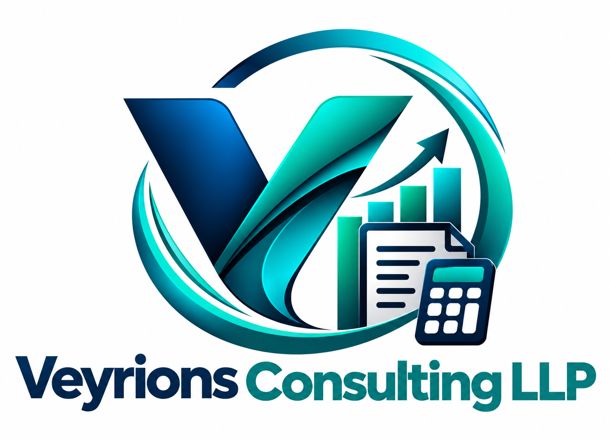

Income Tax
IT returns, tax planning support and compliance assistance for individuals and businesses.

VEYRIONSPractical, responsive and business-focused professional services designed to keep your finances compliant and your decisions confident.
Professional tax & business advisory
Veyrions Consulting LLP helps businesses and professionals navigate tax, compliance and finance with a clear, hands-on approach.
From GST registrations and returns to export refunds, customs, TDS and accounting management, our focus is simple: accurate work, practical advice and dependable support.
A focused suite of compliance, tax and finance services for growing businesses.
IT returns, tax planning support and compliance assistance for individuals and businesses.
Registration, returns, reconciliations, notices, refunds and end-to-end GST support.
Export refunds, refund applications, departmental correspondence and litigation assistance.
TDS filings, payment support, reconciliations and related compliance requirements.
Reliable books, accounting management, reporting support and finance operations.
Customs advisory, duty drawback and Foreign Trade Policy related assistance.
We translate complex tax requirements into practical next steps.
Fast, structured assistance when deadlines and notices matter.
Advice built around compliance, cash flow and operational realities.
Tax, GST, customs and accounting support under one roof.
Have a tax, GST, customs or accounting requirement? Tell us what you need and our team will get back to you.
379 Workplace Hamleys BL, DG 100 Ft Rd,
Indiranagar, H.A.L II Stage,
Bangalore – 560008
K V Layout, 2-3-381, behind LIC Office,
Nehru Nagar, Tirupati,
Andhra Pradesh – 517501